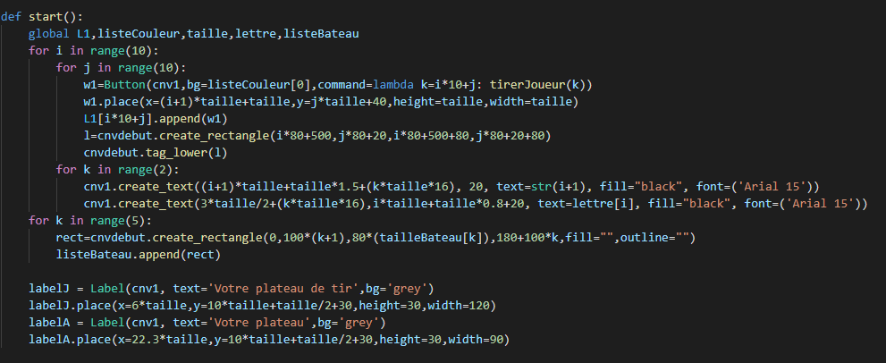
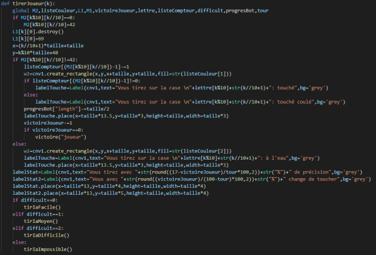
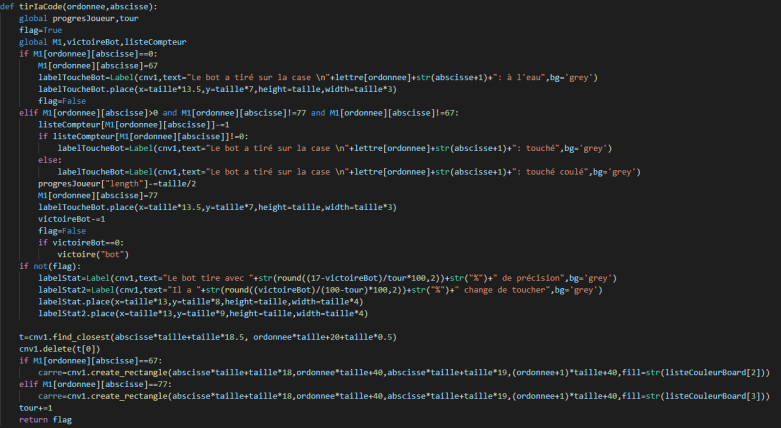
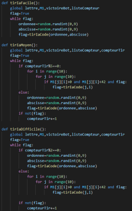

Nous allons expliquer certaines fonctions qui peuvent paraître difficile à comprendre au premier coup d'oeil.
La première fonction que nous allons présenter est start().

Ce n'est pas une grosse fonction mais chaque élément qu'elle définie est utilisé dans une autre partie du code
et nous avons donc pensé qu'il était important de l'expliciter.
Dans un premier temps nous créons 100 boutons dans une double boucle d'indice i et j avec un indice k égal à i*10+j ce qui correspond à l'indice de ligne plus l'indice de colonne.
Ils font tous appel à la fonction tirerJoueur(k) que nous expliquerons en second.
Chaque bouton est ajouté à la liste L1 à l'indice k. Ce sera la liste de boutons qui nous permettra de les manipuler à partir de leur indice car ils n'ont pas de nom.
Pendant cette double boucle nous créons également le plateau de la page de placement. tag_lower(l) met le rectangle en second plan ce qui
permettra de placer les bateaux au dessus des traits ce qui est plus joli.
Dans la boucle d'indice i nous avons une boucle d'indice k permettant de créer les lettres et numéros des plateaux dans la page de jeu.
Ces lettres et numéros désignent les coordonnées des cases comme pour le jeu d'échecs.
Une fois sorti de la double boucle nous créons les 5 bateaux que nous mettons ensuite dans une liste globale afin de faciliter le reste du code.
Nous créons ensuite 2 labels pour indiquer quel plateau est au joueur et quel plateau est à l'adversaire.
La deuxième fonction que nous allons présenter est tirJoueur(k) et les fonctions associées.

C'est la fonction qui permet au joueur tirer quand
il appuie sur une des cases du plateau de l'adversaire. Le paramètre k représente le numéro du bouton.
On cherche ensuite sa position dans la matrice M2 qui représente la matrice de l'adversaire.
Le résultat de k%10 donne l'indice de ligne et le résultat de k//10 donne l'indice de colonne.
Avec ces 2 indices on trouve la case du bouton sur laquelle on va intéragir.
Si la case vaut 0 c'est une case d'eau.
On met alors sa valeur à 42 car c'est une valeur non utilisée dans le programme et que nous aimons la référence à H2G2 le guide du voyageur intergalactique.
Ensuite nous détruisons le bouton numéro k de la liste de bouton que nous avons créé dans start.
Puis, afin de faciliter le code, nous définissons x et y comme les coordonnées en haut à gauche du bouton sur lequel on a cliqué.
On multiplie donc les indices par la taille pour obtenir ce x et ce y.
Ensuite si la case sur laquelle nous avons cliqué n'était pas une case d'eau on enlève 1 au nombre de cases du bateau touché dans listeCompteur
grâce au numéro dans la matrice car chaque bateau a un numéro qui lui est propre allant de 1 à 5. On crée ensuite un rectangle à l'emplacement du bouton détruit.
Si le bateau n'est pas détruit (s'il reste plus de 0 case de bateau dans listeCompteur à l'indice du bateau) on met un label "touché".
Sinon on met un label "touché coulé" afin de prévenir le joueur. On enlève ensuite 1/17 de sa taille à la progresBar représentant les points de vie de l'ordinateur.
On retire ensuite 1 au total de cases de bateau du bot ce qui équivaut à retirer 1 à victoireJoueur. Si il reste 0 case on appelle la fonction victoire avec
comme paramètres "joueur" ce qui permet de modifier le label sur l'écran de victoire.
Les labels suivants sont juste des statistiques permettant au joueur de connaître ses performances.
Après tout celà c'est au tour de l'ordinateur de jouer. On appelle donc une fonction différente en fonction de la difficulté.
Avant d'expliquer les fonctions de tir de l'ordinateur il faut expliquer la fonction tirIaCode(ordonnee,abscisse) qui s'occupe de vérifier si le tir est valide et de changer
les variables qui doivent être changé quand le tir est valide.

Elle prend 2 paramètres qui sont la ligne et la colonne sur laquelle l'ordinateur tente de tirer. Si la case dans la matrice M1 (la matrice d'état du plateau du joueur)
est égale à 0 c'est de l'eau. On change alors la valeur de la case par une valeur inutilisée dans le reste du code puis on change le label annonçant le tire.
Si la case n'est pas de l'eau, que c'est n'est pas une case d'eau déjà touchée et que ce n'est pas une case de bateau déjà touchée alors c'est une case de bateau.
Dans ce cas on suit le même procédé que quand le joueur touche, c'est à dire qu'on réduit la valeur du bateau dans listeCompteur, qu'on change les labels, qu'on réduit la barre
de points de vie et qu'on réduit de 1 victoireBot.
Si victoireBot est égal à 0 on appelle victoire avec "bot" en paramètre ce qui met fin à la partie.
A chaque fois qu'on teste la valeur de la case, si un test est réussi on change flag à false. C'est la variable qui vérifie si le tir est valide.
A la fin du code on la retourne ce qui va permettre de changer la valeur du flag de la boucle while des tir de l'ordinateur pour quitter la boucle.
La fonction tirIaFacile() est la plus basique.

Elle permet de tirer aléatoirement sur le plateau du joueur. Pour ce faire on défini un flag qui restera vrai tant que le tir
n'aura pas été validé. Dans cette boucle while nous créons x et y avec des valeurs aléatoires de 0 à 9 puis nous appelons tirIaCode(x,y) afin de tirer.
Les autres variables diffères seulement dans le fait que certaines fois à la place de tirer aléatoirement elles tirent forcément sur une case.
Pour ce faire au lieu de choisir des valeurs aléatoires et d'invoquer la chance nous regardons juste la matrice jusqu'à trouver une case de bateau sur laquelle nous tirons.